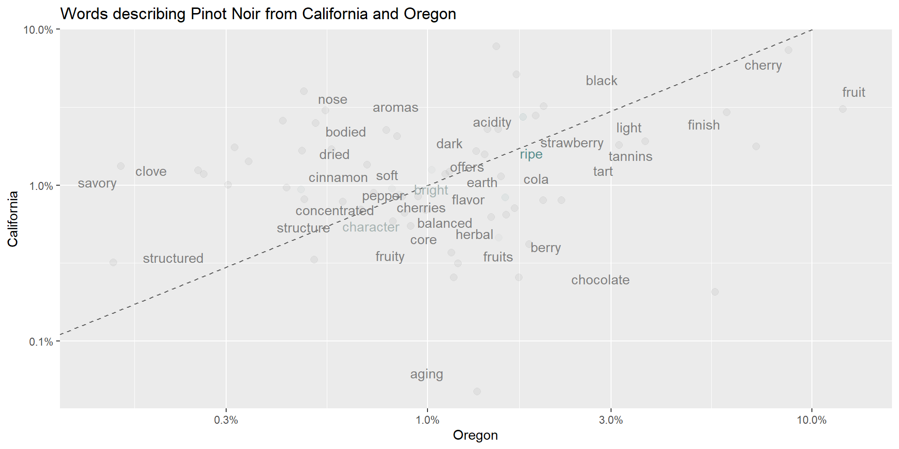
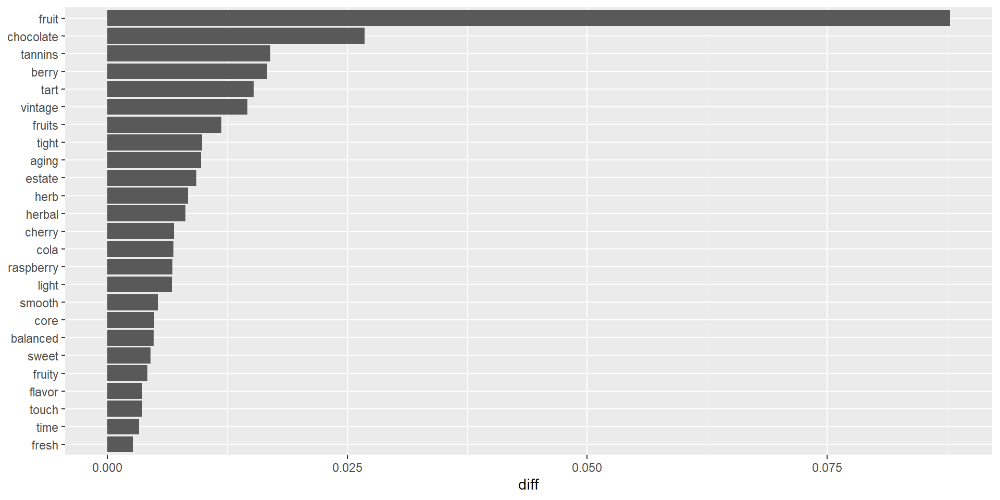

[1] 0.52000000 0.04807692Applied Machine Learning
\[ P(c|x) = \frac{P(x|c)P(c)}{P(x)} = \frac{P(c \space \land \space x)}{P(x)} \]
c and x, basically.\[ P(L~|~{\rm features}) = \frac{P({\rm features}~|~L)P(L)}{P({\rm features})} \]
\[ P({\rm A}~|~{\rm B}) = \frac{P({\rm B}~|~ \rm{A})P(\rm{A})}{P({\rm B})} \]
P(is_spam) = .5P(called_spam|is_spam) = .99P(called_spam|isnt_spam) = .5\[ P({\rm Cherry}~|~{\rm Chardonnay}) * P({\rm Fruit}~|~{\rm Chardonnay}) * P({\rm Bordeaux}~|~{\rm Chardonnay}) \]
\[ \frac{P(L_1~|~{\rm features})}{P(L_2~|~{\rm features})} = \frac{P({\rm features}~|~L_1)}{P({\rm features}~|~L_2)}\frac{P(L_1)}{P(L_2)} \]
\[ \begin{align} P({\rm Cherry} &~|~ {\rm Chardonnay}) *\\ P({\rm Fruit} &~|~ {\rm Chardonnay}) *\\ P({\rm Bordeaux} &~|~ {\rm Chardonnay}) \end{align} \]
library(tidyverse)
library(caret)
library(fastDummies)
library(thematic)
library(naivebayes) # New
library(tidytext) # New
theme_set(theme_dark())
thematic_rmd(bg = "#111", fg = "#eee", accent = "#eee")
wine <- readRDS(gzcon(url("https://cd-public.github.io/D505/dat/pinot.rds")))
names(wine)[names(wine) == 'id'] = 'ID'wino <- wine %>%
mutate(year_f = as.factor(year)) %>%
mutate(cherry = str_detect(description,"cherry")) %>%
mutate(chocolate = str_detect(description,"chocolate")) %>%
mutate(earth = str_detect(description,"earth")) %>%
select(-description, year)
glimpse(wino)Rows: 8,380
Columns: 9
$ ID <int> 1, 2, 3, 4, 5, 6, 7, 8, 9, 10, 11, 12, 13, 14, 15, 16, 17, 1…
$ province <chr> "Oregon", "Oregon", "California", "Oregon", "Oregon", "Orego…
$ price <dbl> 65, 20, 69, 50, 22, 25, 64, 55, 44, 38, 28, 45, 22, 55, 40, …
$ points <dbl> 87, 87, 87, 86, 86, 86, 91, 91, 91, 91, 85, 85, 85, 89, 89, …
$ year <dbl> 2012, 2013, 2011, 2010, 2009, 2015, 2013, 2012, 2014, 2014, …
$ year_f <fct> 2012, 2013, 2011, 2010, 2009, 2015, 2013, 2012, 2014, 2014, …
$ cherry <lgl> FALSE, FALSE, FALSE, FALSE, FALSE, FALSE, FALSE, TRUE, FALSE…
$ chocolate <lgl> FALSE, TRUE, FALSE, FALSE, FALSE, FALSE, FALSE, FALSE, FALSE…
$ earth <lgl> TRUE, FALSE, TRUE, FALSE, TRUE, FALSE, FALSE, FALSE, FALSE, …\(p(Oregon | cherry) = \frac{p(Oregon \space\&\space Cherry)}{p(Cherry)}\)
\(p(NY | cherry) = \frac{p(NY \space\&\space Cherry)}{p(Cherry)}\)
Naive Bayes
6707 samples
8 predictor
6 classes: 'Burgundy', 'California', 'Casablanca_Valley', 'Marlborough', 'New_York', 'Oregon'
No pre-processing
Resampling: Cross-Validated (10 fold)
Summary of sample sizes: 6037, 6037, 6036, 6036, 6036, 6037, ...
Resampling results across tuning parameters:
usekernel Accuracy Kappa
FALSE 0.4792050 0.17112459
TRUE 0.3553707 0.03408878
Tuning parameter 'laplace' was held constant at a value of 0
Tuning
parameter 'adjust' was held constant at a value of 1
Kappa was used to select the optimal model using the largest value.
The final values used for the model were laplace = 0, usekernel = FALSE
and adjust = 1.wino <- wino %>%
select(-starts_with("year_")) %>%
mutate(points_f = case_when(
points < 90 ~ "low",
points >= 90 & points < 96 ~ "med",
points >= 96 ~ "high"
)
) %>%
mutate(price_f = case_when(
price < 16 ~ "low",
price >= 16 & price < 41 ~ "med",
price >= 41 ~ "high"
)
) %>%
mutate(year_f = case_when(
year < 2005 ~ "old",
year >= 2005 & year < 2011 ~ "recent",
year >= 2011 ~ "current"
)
) %>%
select(-price,-points,-year)
head(wino) ID province cherry chocolate earth points_f price_f year_f
1 1 Oregon FALSE FALSE TRUE low high current
2 2 Oregon FALSE TRUE FALSE low med current
3 3 California FALSE FALSE TRUE low high current
4 4 Oregon FALSE FALSE FALSE low high recent
5 5 Oregon FALSE FALSE TRUE low med recent
6 6 Oregon FALSE FALSE FALSE low med currentNaive Bayes
6707 samples
7 predictor
6 classes: 'Burgundy', 'California', 'Casablanca_Valley', 'Marlborough', 'New_York', 'Oregon'
No pre-processing
Resampling: Cross-Validated (10 fold)
Summary of sample sizes: 6036, 6034, 6036, 6038, 6034, 6038, ...
Resampling results across tuning parameters:
usekernel Accuracy Kappa
FALSE 0.4544189 0.2545278
TRUE 0.5206607 0.1511061
Tuning parameter 'laplace' was held constant at a value of 0
Tuning
parameter 'adjust' was held constant at a value of 1
Kappa was used to select the optimal model using the largest value.
The final values used for the model were laplace = 0, usekernel = FALSE
and adjust = 1.Confusion Matrix and Statistics
Reference
Prediction Burgundy California Casablanca_Valley Marlborough New_York
Burgundy 208 308 10 20 6
California 19 421 2 10 10
Casablanca_Valley 2 23 10 4 3
Marlborough 0 3 1 1 1
New_York 1 5 1 7 5
Oregon 8 31 2 3 1
Reference
Prediction Oregon
Burgundy 269
California 140
Casablanca_Valley 8
Marlborough 10
New_York 11
Oregon 109
Overall Statistics
Accuracy : 0.4507
95% CI : (0.4267, 0.4749)
No Information Rate : 0.4728
P-Value [Acc > NIR] : 0.9669
Kappa : 0.2464
Mcnemar's Test P-Value : <2e-16
Statistics by Class:
Class: Burgundy Class: California Class: Casablanca_Valley
Sensitivity 0.8739 0.5322 0.384615
Specificity 0.5728 0.7948 0.975713
Pos Pred Value 0.2533 0.6993 0.200000
Neg Pred Value 0.9648 0.6545 0.990142
Prevalence 0.1423 0.4728 0.015541
Detection Rate 0.1243 0.2516 0.005977
Detection Prevalence 0.4907 0.3598 0.029886
Balanced Accuracy 0.7234 0.6635 0.680164
Class: Marlborough Class: New_York Class: Oregon
Sensitivity 0.0222222 0.192308 0.19927
Specificity 0.9907862 0.984821 0.96004
Pos Pred Value 0.0625000 0.166667 0.70779
Neg Pred Value 0.9734460 0.987219 0.71165
Prevalence 0.0268978 0.015541 0.32696
Detection Rate 0.0005977 0.002989 0.06515
Detection Prevalence 0.0095637 0.017932 0.09205
Balanced Accuracy 0.5065042 0.588564 0.57965drofessor falvin ID province price points year
1 1 Oregon 65 87 2012
2 2 Oregon 20 87 2013
3 3 California 69 87 2011
4 4 Oregon 50 86 2010
5 5 Oregon 22 86 2009
6 6 Oregon 25 86 2015
description
1 Much like the regular bottling from 2012, this comes across as rather rough and tannic, with rustic, earthy, herbal characteristics. Nonetheless, if you think of it as a pleasantly unfussy country wine, it's a good companion to a hearty winter stew.
2 A sleek mix of tart berry, stem and herb, along with a hint of oak and chocolate, this is a fair value in a widely available, drink-now Oregon Pinot. The wine oak-aged for six months, whether in neutral or re-staved is not indicated.
3 Oak and earth intermingle around robust aromas of wet forest floor in this vineyard-designated Pinot that hails from a high-elevation site. Small in production, it offers intense, full-bodied raspberry and blackberry steeped in smoky spice and smooth texture.
4 As with many of the Erath 2010 vineyard designates, this is strongly herbal. The notes of leaf and herb create somewhat unripe flavor impressions, with a touch of bitterness on the finish. The fruit just passes the ripeness of sweet tomatoes.
5 A stiff, tannic wine, this slowly opens and brings brambly berry flavors into play, along with notes of earthy herbs. There's a touch of bitterness to the tannins.
6 Some rosés are made simply by bleeding the juice from the fermenter, to concentrate the remaining wine. Whether or not that is the case here, the wine has the simple pleasant lightly candied strawberry flavors one might expect from such a technique. It's fruity and undemanding. Drink up.# A tibble: 6 × 6
# Groups: word [6]
ID word n freq exists total
<int> <chr> <int> <dbl> <lgl> <int>
1 1 2012 1 0.0588 TRUE 71
2 1 bottling 1 0.0588 TRUE 849
3 1 characteristics 1 0.0588 TRUE 61
4 1 companion 1 0.0588 TRUE 22
5 1 country 1 0.0588 TRUE 11
6 1 earthy 1 0.0588 TRUE 804LEFT JOIN in 503 yet?The LEFT JOIN keyword returns all records from the left table (table1), and the matching records from the right table (table2). The result is 0 records from the right side, if there is no match.In SQL, LEFT JOIN retrieves all records from the left table and only the matching records from the right table. When there is no matching record found, NULL values are returned for columns from the right table. This makes LEFT JOIN extremely useful for queries where you need to retain all records from one table, even if there is no corresponding match in the other table.# A tibble: 6 × 7
# Groups: word [6]
ID word n freq exists total province
<int> <chr> <int> <dbl> <lgl> <int> <chr>
1 1 2012 1 0.0588 TRUE 71 Oregon
2 1 bottling 1 0.0588 TRUE 849 Oregon
3 1 characteristics 1 0.0588 TRUE 61 Oregon
4 1 companion 1 0.0588 TRUE 22 Oregon
5 1 country 1 0.0588 TRUE 11 Oregon
6 1 earthy 1 0.0588 TRUE 804 Oregon df %>%
count(province, word) %>%
group_by(province) %>%
top_n(5,n) %>%
arrange(province, desc(n)) %>%
head()# A tibble: 6 × 3
# Groups: province [2]
word province n
<chr> <chr> <int>
1 tannins Burgundy 763
2 drink Burgundy 673
3 acidity Burgundy 652
4 red Burgundy 630
5 fruits Burgundy 575
6 cherry California 1917Use the top words by province to…
library(scales)
wtxt <- wine %>%
unnest_tokens(word, description) %>%
anti_join(stop_words) %>%
filter(str_detect(string = word, pattern = "[a-z+]")) %>% # get rid weird non alphas
filter(str_length(word)>3) %>% # get rid of strings shorter than 3 characters
group_by(word) %>%
mutate(total=n()) %>%
ungroup()
wtxt %>%
filter(province=="Oregon" | province=="California") %>%
filter(!(word %in% c("wine","pinot","drink","noir","vineyard","palate","notes","flavors","bottling"))) %>%
filter(total > 400) %>%
group_by(province, word) %>%
count() %>%
group_by(province) %>%
mutate(proportion = n / sum(n)) %>%
pivot_wider(id_cols = word, names_from = province, values_from = proportion) %>%
ggplot(aes(x = Oregon, y = California, color = abs(Oregon - California))) +
geom_abline(color = "gray40", lty = 2) +
geom_jitter(alpha = 0.1, size = 2.5, width = 0.3, height = 0.3) +
geom_text(aes(label = word), check_overlap = TRUE, vjust = 1.5) +
scale_x_log10(labels = percent_format()) +
scale_y_log10(labels = percent_format()) +
scale_color_gradient(limits = c(0, 0.001), low = "darkslategray4", high = "gray75") +
theme(legend.position="none") +
labs(x = "Oregon", y = "California", title = "Words describing Pinot Noir from California and Oregon")
dtxt <- wtxt %>%
filter(province=="Oregon" | province=="California") %>%
filter(!(word %in% c("wine","pinot","drink","noir","vineyard","palate","notes","flavors","bottling","bottle","finish"))) %>%
filter(total > 400) %>%
group_by(province, word) %>%
count() %>%
group_by(province) %>%
mutate(proportion = n / sum(n)) %>%
pivot_wider(id_cols = word, names_from = province, values_from = proportion) %>%
mutate(diff=Oregon-California)
dtxt %>%
top_n(25, diff) %>%
mutate(word = reorder(word, diff)) %>%
ggplot(aes(word, diff)) +
geom_col() +
xlab(NULL) +
coord_flip()